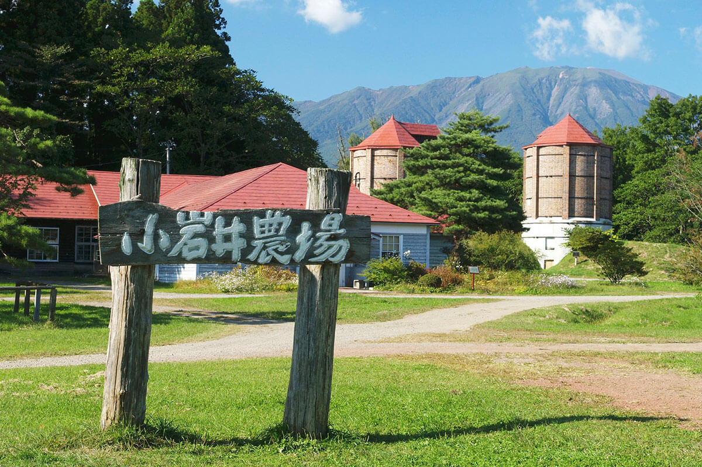
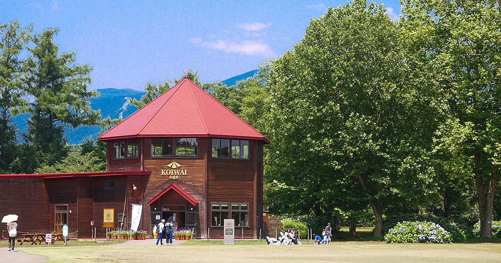

小岩井農場


小岩井農場は、岩手県岩手郡雫石町と滝沢市にまたがって所在する
日本最大の民間総合農場です。観光エリアである「まきば園」は、
子供も大人も楽しめるレジャースポットでとなっております。冬に
なると雪まつりが開催され、雪像や迷路、そり滑りで遊んだり、
花火を観ることもできます。
観光情報
所在地 : 岩手県岩手郡雫石町丸谷地36-1
電話番号 : 019-692-4321
定休日 : 年中無休
営業時間 :
平日：9時～16時
土日祝：9時～17時
料金 : 大人800円、小人300円（5才～小学生）
[アクセス経路]
ルート1： 東北自動車道 盛岡ICより約15分（12㎞）
ルート2： JR東北・秋田新幹線 盛岡駅で下車後、路線バス・タクシー